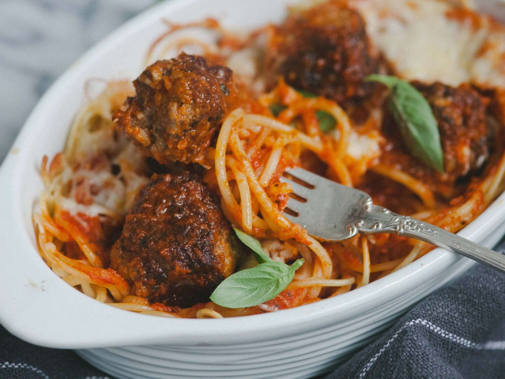

Spaghetti and Meatballs

Succulent meaty BALLS, ontop of some divine spaghetti
are you in need of a quick easy meal
Something that can remove your hunger?
take you through your day?
then you'd love to make these Spaghetti and meatballs
The absolute finest of dishes could be made by your self
Ingredients of this dish include:
- 2 eggs
- ¼ cup Italian-seasoned bread crumbs
- ¼ pounds ground beef
- ¾ tablespoon dried oregano, divided
- ¾ tablespoon garlic powder, divided
- ¾ tablespoon ground black pepper, divided
- ¾ tablespoon dried basil, divided
- 1 tablespoon olive oil, or as needed
- 1 onion, chopped
- 2 (6.5 ounce) cans tomato sauce
- 1 (6 ounce) can tomato paste
- 1 (6 ounce) can sliced mushrooms
- 1 (14 ounce) package spaghetti
- ¼ cup grated Parmesan cheese
Step-by-Step instructions on how to make your self the meal of perfection:
- Preheat the oven to 350 degrees F (175 degrees C).
- Mix eggs and bread crumbs together in a bowl. Add ground beef. Add 1/2 of the oregano, garlic powder, black pepper, and basil. Mix well. Shape into meatballs that are about 1 inch in diameter.
- Heat oil in a skillet over medium-low heat. Cook meatballs in the pan with onion until golden brown, 7 to 10 minutes. Add tomato sauce, tomato paste, mushrooms, and remaining oregano, garlic powder, black pepper, and basil. Simmer for about 10 minutes.
- Meanwhile, bring a large pot of lightly salted water to a boil. Cook spaghetti in the boiling water, stirring occasionally, until tender yet firm to the bite, about 12 minutes. Drain.
- Place spaghetti into a 9x13-inch baking pan and pour sauce evenly over the top. Top with Parmesan cheese and cover with aluminum foil.
- Bake in the preheated oven until bubbly and and cheese is melted, about 30 minutes